FriendlyIFR
A browser-based trainer for practising instrument (IFR) radio-navigation procedures.
FriendlyIFR shows an airplane on a 2D map together with radio-navigation beacons (one NDB, two VORs) and the cockpit instruments that read them. You steer the airplane, set the wind, and watch how the instruments react. The goal is to build a mental picture of where the airplane is relative to the beacons and to practise the standard IFR procedures — radial interception, active tracking in wind, procedure turns and holding patterns — until they become automatic.
It was built as a bachelor's thesis at the Faculty of Transport and Traffic Sciences, University of Zagreb, for the Aeronautics department. It is a simple, self-study trainer: it deliberately leaves out everything that isn't needed for the procedures (altitude, aircraft performance, ATC, weather other than wind) so you can focus on one thing — reading the instruments and flying by them. It is not a certified training device (BITD/FNPT/FTD/FFS) and does not replace flight training; it prepares you for it.
Quick start
- Open the app. The airplane appears in the middle of the map with a random heading; the simulation is paused (pause symbol in the centre of the map).
- In the control panel set Airplane speed (kn) and, if you want, Wind speed (kn) and Wind direction (the direction the wind blows from).
- Turn on the instruments you need in the Instruments box (DG, RBI, RMI, HSI, CDI). They appear on the left and can be dragged anywhere.
- Drag the beacons (NDB, VOR A, VOR B) and the airplane where you want them.
- Un-pause with P or the Paused switch. Steer with B (left) and M (right) — standard-rate turn, 3°/s. The airplane leaves a black trail.
- Turn the HSI course knob (CRS) or the CDI OBS knob by rolling the mouse wheel over the instrument.
The simulation runs in real time: one minute on the stopwatch is one minute of flight, so timed legs (procedure turns, holding) can be flown with the built-in stopwatch.
The screen
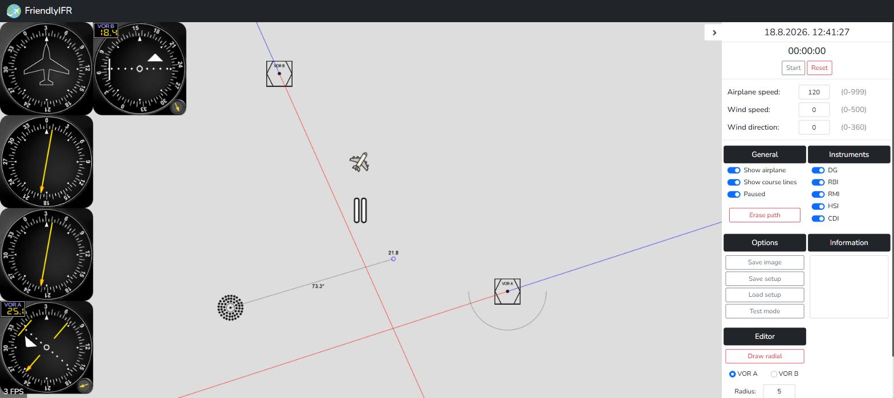
The screen is split into the control panel on the right and the interactive map that fills the rest. The arrow button at the top-left corner of the panel collapses it to give the map more room.
Control panel
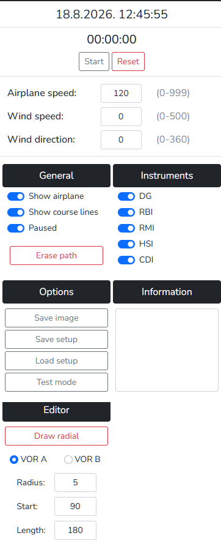
| Top | |
|---|---|
| Clock | Current date and time of your computer. |
| Stopwatch | Start starts it and turns into Stop; Reset zeroes it. Use it for timed legs. |
| Airplane speed | True airspeed in knots, whole number 0–999. The wind is added on top. |
| Wind speed / direction | Knots (0–500) and degrees (0–360). Direction is where the wind blows from, as in a METAR. Invalid input blinks red and is ignored. |
| General | |
| Show airplane | Shows/hides the airplane and its trail (V). |
| Show course lines | Shows/hides the selected radial lines drawn through VOR A and VOR B. |
| Paused | Freezes the airplane (P). Also engaged automatically when you switch to another tab. |
| Erase path | Clears the trail. |
| Instruments | |
| DG, RBI, RMI, HSI, CDI | One switch per instrument. Visible instruments stack in a column on the left; drag them anywhere. |
| Options | |
| Save image | Reminds you to use your system's screenshot key (Print Screen). |
| Save setup | Downloads the whole scenario as a .nav file (see Save, load & test mode). |
| Load setup | Loads a .nav file with everything visible and editable. |
| Test mode | Loads a .nav file as an exam: airplane hidden, controls locked. |
| Information | |
| Text box | Free text — write the task for the exercise here. It is stored in the .nav file. |
| Editor | |
| Draw radial | Toggle. While it reads Drawing radial, dragging from the centre of any beacon draws a radial / bearing line on the map. |
| VOR A / VOR B | Chooses which VOR the DME-arc fields below apply to. |
| Radius, Start, Length | DME arc around the chosen VOR: radius in NM, start bearing in degrees, arc length in degrees (0 = no arc). |
Interactive map
- Pan by dragging empty map; zoom with the mouse wheel (limited range).
- Move the airplane, the beacons and the instruments by dragging them. In test mode only the instruments can be moved.
- The airplane moves according to its speed, heading and the wind, and draws a black trail behind it. When paused, a pause symbol is shown in the centre of the map.
- The map area is finite (about 250 NM wide); the view is clamped to it.
Keyboard
| Key | Action |
|---|---|
| B / M | Turn left / right at standard rate (3°/s). Hold to keep turning. |
| A / D | Fast turn left / right — for setting up a scenario. Disabled in test mode. |
| P | Pause / resume (not in test mode — use the Test mode button). |
| V | Show / hide the airplane and trail (not in test mode). |
Keys are ignored while an input field has focus — click on the map first.
Beacons
Three ground stations are always present and drawn with their aeronautical-chart symbols. There is no receiver tuning: each instrument is permanently bound to a beacon (RBI/RMI → NDB, HSI → VOR A, CDI → VOR B).
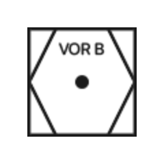
Selected radial (course lines)
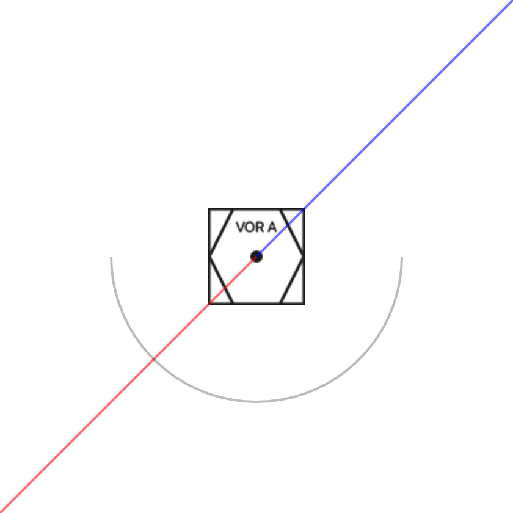
Each VOR draws the course selected on its instrument (HSI → VOR A, CDI → VOR B) as a line through the station: the red half is the selected radial (outbound from the station), the blue half is its reciprocal. Turning the CRS/OBS knob rotates the line. The lines are a visual aid for building the mental picture; hide them with Show course lines when you want to fly "blind". They are hidden automatically in test mode.
Within ±5° of the line perpendicular to the selected course the receiver cannot tell TO from FROM, and the HSI/CDI show the OFF flag.
DME arc
An arc of constant distance around VOR A or VOR B, defined in the Editor by radius (NM), start bearing and length (°). Use it to lay out DME-arc arrivals.
Drawing radials and bearings
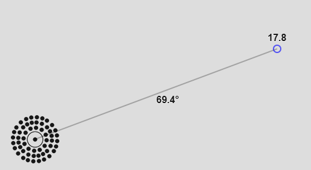
Press Draw radial, then drag from the centre of a beacon out onto the map. The line shows its bearing from the station (i.e. the radial / QDR) at the midpoint and the distance of the endpoint in NM. Drag the endpoint circle to adjust it; drop it back onto the beacon to delete it. Any number of lines can be drawn from any beacon, and they are saved with the setup — this is how you mark the radials, QDMs/QDRs and fixes of an exercise.
Instruments
Five instruments, all with the same look. Each is turned on with its switch and can be dragged anywhere on the screen. Their readings are always live, even while paused.
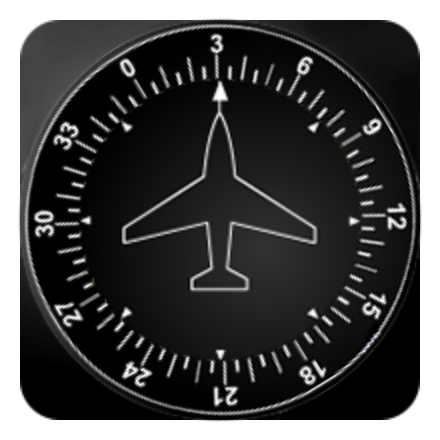
DG — Directional Gyro
Fixed airplane silhouette, rotating compass card. Reads the airplane's heading under the top index.
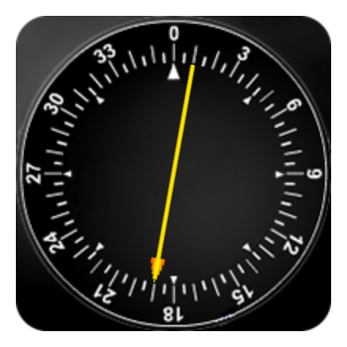
RBI — Relative Bearing Indicator
Fixed card with N on top; the needle shows the relative bearing to the NDB (angle from the nose to the station). QDM = heading + relative bearing.
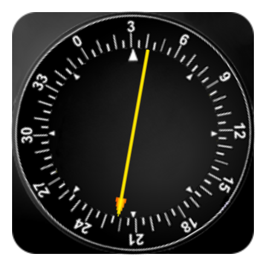
RMI — Radio Magnetic Indicator
DG + RBI in one: the card shows heading, the needle points at the NDB, so the needle head reads the QDM and its tail the QDR directly.
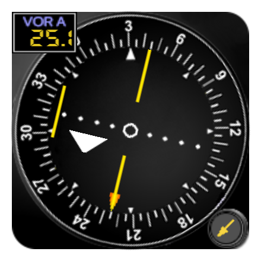
HSI — Horizontal Situation Indicator
Bound to VOR A. Rotating card shows heading; the course arrow shows the selected course; the centre bar slides left/right with the deviation from it (each dot 2°). Roll the mouse wheel over the instrument to turn the CRS knob (bottom-right). Shows TO / FROM / OFF and the DME distance to VOR A (top-left).
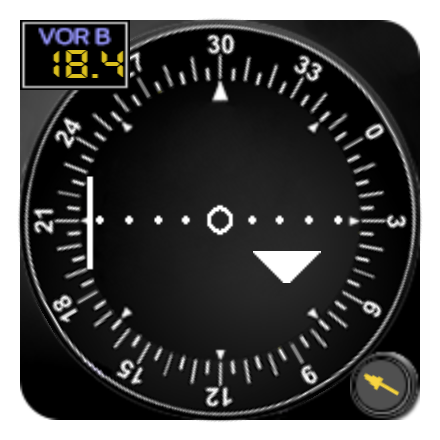
CDI — Course Deviation Indicator
Bound to VOR B. Selected course under the top index, vertical needle deviates left/right (each dot 2°, full scale 10°). Roll the mouse wheel over the instrument to turn the OBS knob. Shows TO / FROM / OFF and the DME distance to VOR B.
| Instrument | Beacon | Card | Needle / bar shows | Control |
|---|---|---|---|---|
| DG | — | rotates (heading) | — | — |
| RBI | NDB | fixed | relative bearing to NDB | — |
| RMI | NDB | rotates (heading) | QDM / QDR to NDB | — |
| HSI | VOR A | rotates (heading) | selected course, deviation, TO/FROM, DME | CRS knob — mouse wheel |
| CDI | VOR B | set by OBS | deviation, TO/FROM, DME | OBS knob — mouse wheel |
Not modelled: ADF frequency selection, altitude and glide-path indications on the HSI, aircraft performance.
Save, load & test mode
Setup files (.nav)
Save setup downloads a Setup1.nav file (plain JSON) with the complete scenario:
airplane position, heading, speed and visibility; wind; positions of the beacons with all drawn radials and
DME arcs; which instruments are visible and where they are; the HSI course and CDI OBS setting; the course-line
switch; and the text from the Information box. Load setup restores it (paused). Files can be
shared between users — this is how an instructor hands out exercises. Files from the original desktop version
of the trainer are also accepted on a best-effort basis.
Test mode
Test mode loads a .nav file as an exam. The Test mode button cycles through four
states:
| Button reads | What happens |
|---|---|
| Test mode | Click → choose a .nav file. The scenario loads paused with the airplane and course lines hidden; speed, wind, switches, editor and fast turns are locked. Only the instruments (and the map view) can be moved. Determine your position from the instruments and prepare. |
| Start | Click → the airplane starts moving. Fly the task by instruments only (B/M). |
| Finish | Click → the simulation pauses and the airplane and its trail become visible so the flown track can be reviewed. |
| Practice mode | Click → controls are unlocked again and the button returns to Test mode. |
Closing or reloading the page asks for confirmation; switching to another browser tab pauses the simulation (outside test mode).
Navigation background
The minimum theory needed to use the trainer well. Three directions must be kept apart:
- Heading (HDG) — where the nose points; what the DG shows.
- Course — the intended path over the ground (a radial, a QDM…).
- Track — the path actually flown over the ground.
Without wind, all three coincide. With wind, heading must be offset from the course so that the track equals the course.
Wind
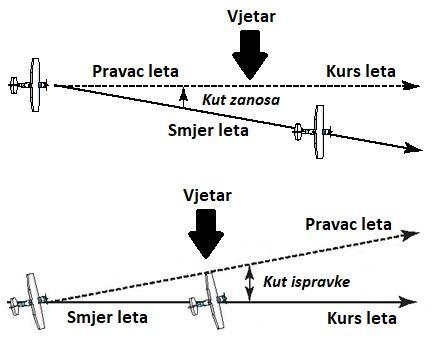
Vjetar = wind · Pravac leta = heading · Kurs leta = course · Smjer leta = track · Kut zanosa = drift angle · Kut ispravke = correction angle
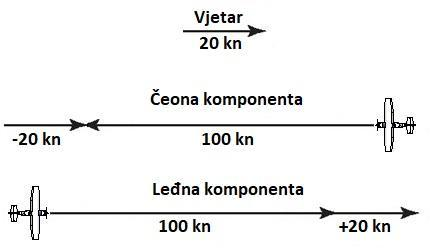
Vjetar = wind · Čeona/leđna komponenta = headwind/tailwind component
Wind is split into a crosswind component (pushes you off course → needs a heading correction) and a head/tail component (changes ground speed → changes leg times). The trainer models both: the wind vector is simply added to the airplane's movement every frame.
Mental-math wind correction
Take the wind angle β — the angle (0–90°) between the course and the wind line — round it with the table, then:
| β | use | sin β | cos β |
|---|---|---|---|
| 0–20° | 0° | 0 | 1 |
| 21–35° | 30° | 0.5 | 0.9 |
| 36–50° | 45° | 0.7 | 0.7 |
| 51–70° | 60° | 0.9 | 0.5 |
| 71–90° | 90° | 1 | 0 |
W = wind speed, V = airplane speed (kn). Apply α to the heading into the wind. Timed legs are stretched or shortened by V / GS.
Example: course 264°, wind 045°/30 kn, 170 kn. β = 39° → 45°, crosswind = 30 × 0.7 = 21 kn, α = 21 / 170 × 60 ≈ 7°. Wind is from the right, so fly HDG 264 + 7 = 271°.
NDB and VOR
NDB
A non-directional beacon transmits an omnidirectional LF/MF signal. The aircraft's ADF finds the direction to it and shows it as a relative bearing (RBI) or magnetic bearing (RMI). Terms: QDM — magnetic bearing to the station; QDR — magnetic bearing from the station (QDM ± 180°). Range up to about 400 NM, sensitive to atmospheric effects.
VOR
A VHF omnidirectional range lets the receiver measure the radial — the magnetic bearing from the station to the aircraft. More accurate than NDB and not weather-sensitive; standard IFR aid up to ~200 NM. On the HSI/CDI you select a course; the deviation shows how far you are off the selected radial (or its reciprocal), TO/FROM tells which side of the station you are on, and DME gives the slant distance (here: ground distance) in NM.
Reading a VOR position: turn the CRS/OBS knob until the deviation is centred with FROM showing — the selected course is your radial. Two radials from two stations, or a radial and a DME distance, fix your position.
IFR procedures
Passive vs. active tracking
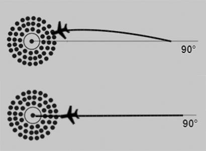
Passive tracking (homing) ignores the wind: you keep the needle on the nose and the aircraft is blown into a curved track. It cannot follow a published radial. Active tracking applies the wind correction angle so the track coincides with the course. When drift is noticed (needle moves off, say, 5°), re-intercept the course at a modest angle (e.g. 30° + 2× α) and, once back on it, resume the corrected heading.
Holding pattern
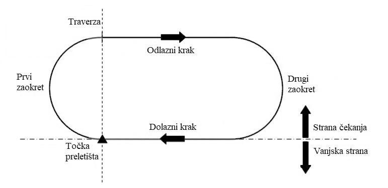
A racetrack used to keep the aircraft in a defined airspace while waiting for clearance. Defined by the fix, the inbound course, the turn direction (standard = right) and the outbound leg length — 1 min below 14 000 ft (1.5 min above), timed from abeam the fix, or a distance/radial. Entries: direct, parallel, teardrop (offset). Wind is corrected on the straight legs by heading (typically 3× α outbound to also compensate the uncorrected turns) and by adjusting the outbound time for the head/tail component.
Procedure turns
Course reversals that start over a beacon or fix and bring the aircraft back onto the inbound course.
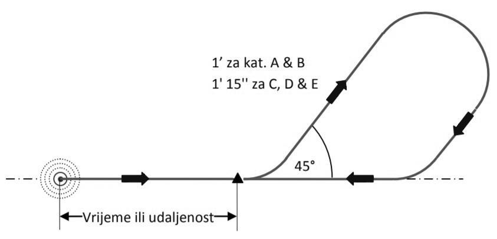
Vrijeme ili udaljenost = time or distance
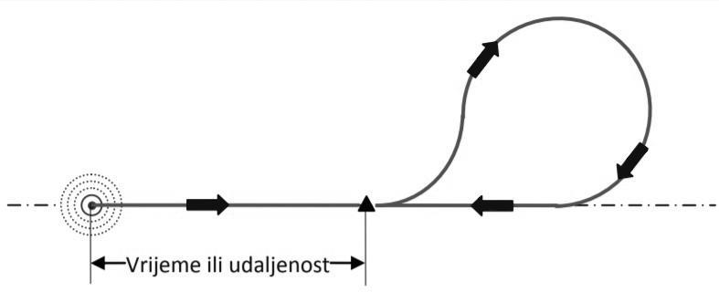
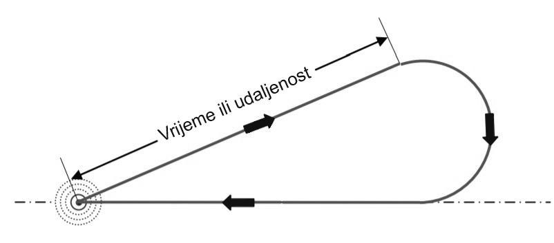
Exercises
Two worked examples from the thesis that together use every feature of the trainer. Recreate them with the
Editor (or have an instructor hand you the .nav file and load it in Test mode).
Bearings on the map are read from the drawn radial lines; positions below are relative to the beacons only.
Exercise 1 — Radial interception and active outbound tracking
| Instruments | DG, RBI, CDI |
|---|---|
| Speed | 170 kn |
| Wind | 045° / 30 kn |
| Beacons | VOR B (CDI) and NDB, NDB roughly south-west of the VOR |
| Drawn lines | R264 from VOR B; QDR 005° and QDR 100° from the NDB |
Task
- Determine the airplane's position.
- Intercept R264 outbound from the VOR at 45°.
- On crossing QDR 005°, intercept it inbound to the NDB.
- Over the NDB, intercept QDR 100° at 45°.
- Demonstrate active outbound tracking from the NDB.
Solution
- Position. Turn the CDI OBS until the needle centres — the card reads the radial you are on (R230 in the thesis run). The DG gives the heading (275°). The RBI shows a relative bearing to the NDB (325°), which places the airplane in a small area at the intersection of "R230 from the VOR" and "NDB 35° left of the nose".
- Intercept R264 at 45°. Set OBS 264, fly HDG 309. As the needle approaches centre, turn onto the radial with the wind correction: wind 045° vs. course 264° gives β = 39° → 45°, crosswind 30 × 0.7 = 21 kn, α = 21/170 × 60 ≈ 7°; wind from the right → HDG 271.
- QDR 005 inbound to the NDB. When the RBI shows you crossing QDR 005 (QDM 185), turn left onto the inbound course 185° with correction → HDG 178, until station passage.
- QDR 100 at 45°. After the NDB, turn left to HDG 055 and intercept QDR 100 at 45°; on the QDR the correction is α ≈ 9.5° (β = 55° → 60°, crosswind 27 kn).
- Active outbound. Deliberately fly HDG 100 (no correction). The wind pushes the airplane right of the QDR and the RBI needle starts to move. When it is off by 5°, re-intercept at 30° plus twice the correction: HDG 100 − 30 − 2 × 9.5 = 051. Back on the QDR, hold the corrected heading 100 − 9.5 ≈ 090.
Exercise 2 — Procedure turn and holding
| Instruments | RMI, HSI |
|---|---|
| Speed | 240 kn |
| Wind | 190° / 30 kn |
| Beacons | VOR A (HSI) and NDB |
| Drawn lines | QDR 300° / 120° through the NDB; R360 from VOR A with the holding fix at 16.6 NM |
Task
- Determine the airplane's position.
- Intercept QDR 300° inbound to the NDB.
- 2 minutes after passing the NDB fly a 45°/180° procedure turn to the left.
- On the way back join a left-hand holding pattern with the fix at R360 / 16.6 NM from VOR A and inbound course 360°.
Solution
- Position. RMI and HSI cards read HDG 105. Turn the HSI CRS until the deviation bar lines up with the course arrow (FROM) — R010 in the thesis run. The RMI needle points at 143°, i.e. the NDB is on QDM 143. The airplane is near the intersection of R010 (VOR A) and QDM 143 (NDB).
- QDR 300 inbound. Turn right and intercept QDR 300 (inbound course 120°). On the QDR: β = 190 − 120 = 70° → 60°, crosswind 30 × 0.9 = 27 kn, α = 27/240 × 60 ≈ 7°; wind from the right → HDG 127.
- 45/180 to the left. Over the NDB start the stopwatch; at 2:00 turn 45° left of the outbound course (120 − 45 = 075) and hold it for 1 minute; then turn right 180° onto 255 and hold it until you re-intercept QDR 120 inbound to the NDB, then HDG 293 (300 − 7). Notice the wind: ground speed is higher on the first segment and lower on the second, so the pattern is not symmetric.
- Holding. Continue on 293 to the fix (R360 / 16.6 NM DME on the HSI). Coming from that direction a direct entry applies. Abeam the fix start the stopwatch and fly the outbound heading with 3× α: 180 + 3 × 1.3 ≈ 184. Outbound the wind is on the nose (β = 10°): head component 30 × cos 10° ≈ 29 kn, GS = 240 − 29 = 211 kn, so the 1-minute leg becomes 240/211 × 60 s ≈ 68 s. At 68 s turn left, intercept R360 inbound and fly course 360 with a small (≈1°) correction to the fix. Fly the pattern once more; the exercise ends on the third fix passage.
About
FriendlyIFR was developed by Luka Havrlišan as the bachelor's thesis Development of an Instrument Procedure Flying Training Device (Faculty of Transport and Traffic Sciences, University of Zagreb, 2021; mentor dr. sc. Tomislav Radišić). The navigation theory on this page follows D. Novak, Zrakoplovna računska navigacija (FPZ, 2012) and T. Bucak & I. Zorić, Zrakoplovni instrumenti i prikaznici (FPZ, 2002); the diagrams in the Navigation background section are from the thesis.
The app is a static web page (HTML/CSS/JavaScript on PixiJS) published from the GitHub repository. Issues and suggestions are welcome there.